13/09/2025 — Năm bài học từ một điện tâm đồ gây hiểu lầm
Bản dịch tiếng Việt của bài "Five Lessons from a Misleading ECG" – Dr. Smith’s ECG Blog. Giữ nguyên toàn bộ 13 hình ảnh của bản gốc.

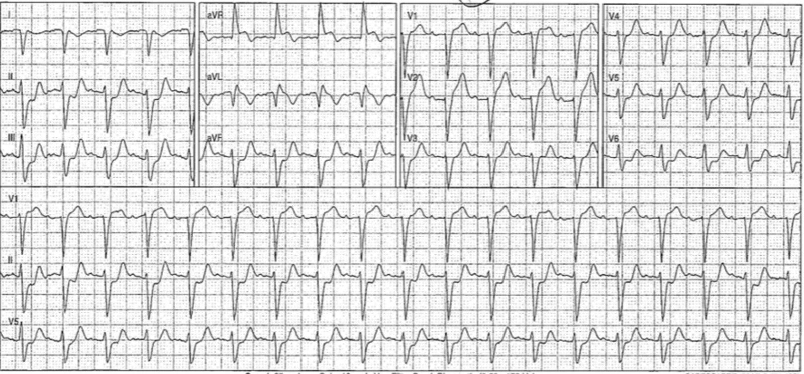
Bài này do Emerson Floyd viết, kèm bình luận của Smith
Lần đầu tôi thấy điện tâm đồ này (#1) là khi thức dậy giữa hai ca trực đêm và nhận được tin nhắn của một người bạn, cũng là bác sĩ cấp cứu:

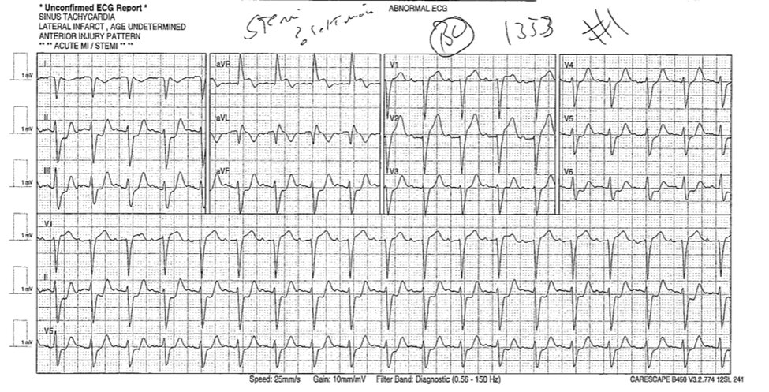
“Tôi đã nhận bệnh nhân này chuyển đến từ một bệnh viện ở xa không có phòng thông tim (cath lab). Bác sĩ tim mạch can thiệp (IC) của chúng tôi bảo tạm hoãn tiêu sợi huyết dựa trên điện tâm đồ. Bác sĩ chuyển viện lo ngại tắc thân chung động mạch vành trái dựa trên aVR. Sgarbossa dương tính? Tôi chưa hề khám bệnh nhân.”
Smith: xem kết quả đọc của Queen of Hearts @PMCardio bên dưới.
Những điều đầu tiên đập vào mắt tôi khi còn đang ngái ngủ là trục lệch cực độ, phức bộ dương hoàn toàn ở aVR và ST chênh xuống ở các chuyển đạo dưới và bên. “Trông xấu đây, có gì đó không ổn,” tôi nghĩ trong cơn buồn ngủ rồi quay lại giường. Khi thức dậy, tôi xem lại và nhận ra rằng tập hợp các dấu hiệu trên là OMI kèm đảo điện cực chi trên (arm lead reversal): chuyển đạo aVR và aVL đã đổi chỗ cho nhau, chuyển đạo I bị đảo ngược. Khi diễn giải trong bối cảnh này, điện tâm đồ có giá trị chẩn đoán tắc đoạn gần LAD hoặc tắc nhánh chéo thứ nhất.
Tôi đề nghị người bạn cung cấp mọi thông tin đã ẩn danh về ca bệnh mà họ có thể cung cấp.
Bệnh nhân 80 tuổi, có tăng huyết áp (HTN) và rối loạn lipid máu (HLD), đến viện lúc 13:50 (150 pm) vì đau ngực giữa xương ức từ buổi trưa.
Điện tâm đồ sau đây do đội cấp cứu ngoài viện (EMS) ghi tại hiện trường, khẳng định nhận định ban đầu của tôi:

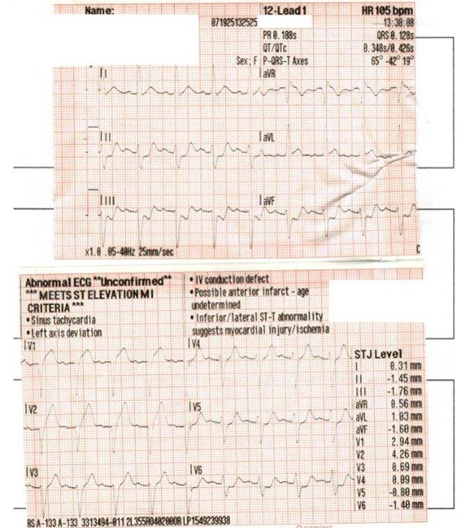
Điện tâm đồ này có giá trị chẩn đoán tắc đoạn gần LAD hoặc tắc nhánh chéo thứ nhất. Ở các chuyển đạo chi, thay đổi rõ nhất là ST chênh xuống soi gương ở các chuyển đạo dưới và ST chênh lên ở aVL. Cũng có ST chênh lên ở V1 và V2 cùng ST chênh xuống ở V5 và V6, phù hợp với hình ảnh “xoáy trước tim (precordial swirl)” mà Smith, Meyers và những người khác đã bàn luận. Đáng lưu ý, không có thay đổi rõ ràng ở chuyển đạo I, vốn là một thành phần trong mẹo ghi nhớ “Cờ Nam Phi (South African Flag)” thường được giảng dạy để nhận biết hình ảnh tổn thương này.
Smith: chuyển đạo I có đoạn khởi đầu ST chênh xuống và đoạn ST thẳng, nên nó vẫn góp phần vào hình thái SAF (Cờ Nam Phi), chỉ là không có ST chênh lên.
Đáng tiếc, bác sĩ ở cơ sở y tế xa xôi này đã không nhận ra đảo điện cực trên điện tâm đồ #1. Kết quả đọc điện tâm đồ này của ông: “Khi đến được đánh giá là không có vẻ nhiễm độc và ổn định huyết động, bà ấy nhịp hơi nhanh 113. Điện tâm đồ cho thấy ST chênh lên ở aVR kèm ST chênh xuống lan tỏa, đáng lo ngại nhồi máu cơ tim do tắc thân chung động mạch vành trái, LBBB kèm ngược hướng (discordance).”
_______
Bình luận của Smith: ST chênh lên (STE) ở aVR kèm ST chênh xuống lan tỏa rất thường bị quy, một cách sai lầm, cho tắc thân chung động mạch vành trái. Nó cho thấy thiếu máu cục bộ dưới nội tâm mạc lan rộng và có thể là biểu hiện của suy giảm tưới máu thân chung trái (left main insufficiency), điều CÓ THỂ là chỉ định vào phòng thông tim, nhưng đó không phải là biểu hiện của tắc hoàn toàn.
Xem bài này về tắc thân chung động mạch vành trái: How does Acute Total Left Main Coronary occlusion present on the ECG? (Tắc hoàn toàn cấp thân chung động mạch vành trái biểu hiện thế nào trên điện tâm đồ?).
Và bài này về ST chênh lên ở aVR: Does ST Elevation in lead aVR indicate acute coronary occlusion? (ST chênh lên ở chuyển đạo aVR có cho thấy tắc mạch vành cấp không?)
________
Bác sĩ đọc điện tâm đồ đã đúng khi nhận thấy các ST chênh xuống đáng lo ngại đến mức nào! Nhưng ST chênh xuống ở tất cả các chuyển đạo dưới-bên gợi ý một vùng tổn thương cụ thể, chứ không chỉ là thiếu máu cục bộ dưới nội tâm mạc toàn thể như gợi ý bởi ST chênh lên ở aVR kèm ST chênh xuống ở II, V5 và V6. Họ cũng đã sai khi chẩn đoán blốc nhánh trái. Như K. Wang và những người khác đã nêu, LBBB đòi hỏi sóng R đơn pha ở I, aVL và V6.
Smith: Có thể chẩn đoán OMI ngay trên điện tâm đồ đầu tiên dù bạn không nhận ra đảo điện cực. Ngoài ra, dù đó là LBBB hay chậm dẫn truyền trong thất không đặc hiệu, ST chênh lên đồng hướng (xem aVR và aVL) vẫn có giá trị chẩn đoán. Và vì vậy, tất cả những điều này đều không quan trọng với Queen of Hearts.

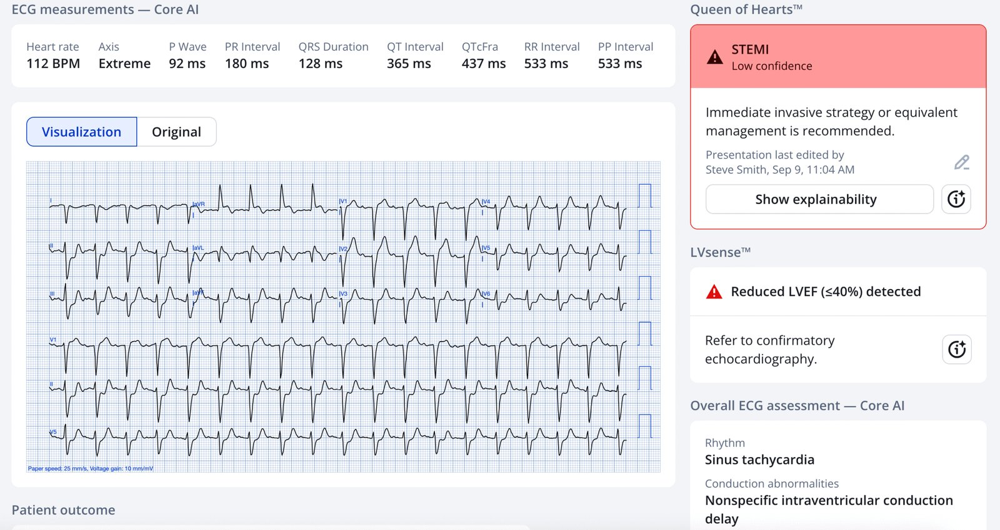
Ứng dụng PMcardio for Individuals 3.0 mới nay đã có mô hình Queen of Hearts mới nhất và khả năng giải thích của AI (bản đồ nhiệt màu xanh)! Tải ngay cho iOS hoặc Android. https://www.powerfulmedical.com/pmcardio-individuals/ (BS. Smith và BS. Meyers đã huấn luyện mô hình AI này và là cổ đông của Powerful Medical).
Bệnh nhân được dùng aspirin trên đường đến viện. Bác sĩ đã lấy chấp thuận dùng TNK dựa trên vẻ ngoài của bệnh nhân và mối lo ngại tắc thân chung trái do ST chênh xuống có vẻ lan tỏa và ST chênh lên ở aVR. Nhưng sau khi xem điện tâm đồ, bác sĩ tim mạch can thiệp ở bệnh viện tuyến trên đã yêu cầu bác sĩ khoa cấp cứu không dùng tiêu sợi huyết, thay vào đó khuyên dùng heparin và chuyển viện. Ở lần trao đổi thứ hai, bác sĩ tim mạch can thiệp yêu cầu chụp CT mạch máu để đánh giá bóc tách trước khi chuyển viện.
Bình luận của Smith: chỉ khoảng 1% “STEMI” (một nhóm nhỏ của OMI đạt tiêu chuẩn milimét của STEMI) là do bóc tách. Dành thời gian đi chụp CT là có hại cho việc chăm sóc bệnh nhân. Hãy dùng siêu âm tại giường để tìm bóc tách, và hãy học cách làm điều đó. I Nghiên cứu này cho thấy siêu âm tại giường có độ nhạy và độ đặc hiệu rất cao đối với bóc tách động mạch chủ. Xem ca này từ 3 ngày trước: A very elderly woman with sudden severe chest pain radiating to her back (Một phụ nữ rất cao tuổi đột ngột đau ngực dữ dội lan ra sau lưng).
Vì bệnh nhân vẫn tiếp tục đau ngực, một điện tâm đồ nữa được ghi một tiếng rưỡi sau điện tâm đồ đầu tiên:

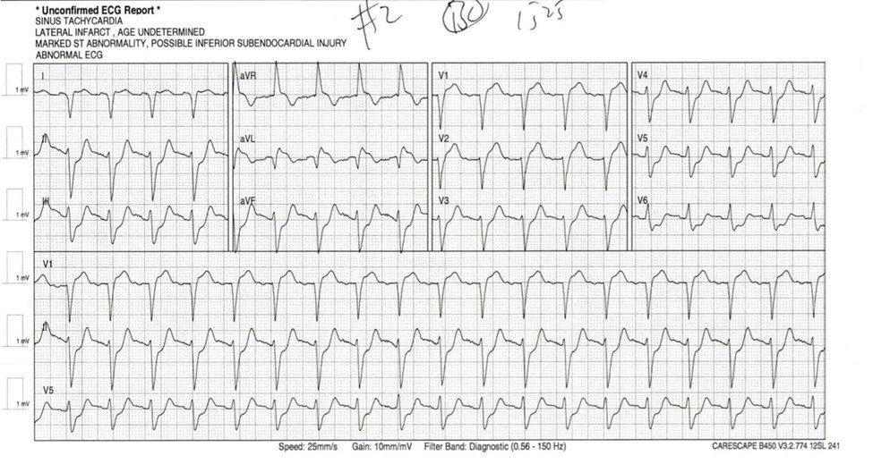
Cùng hình ảnh đảo điện cực đó có mặt trên điện tâm đồ này. Điện tâm đồ được đọc là “Điện tâm đồ cho thấy ST chênh lên ở aVR kèm ST chênh xuống lan tỏa, đáng lo ngại nhồi máu cơ tim do tắc thân chung động mạch vành trái, LBBB kèm ngược hướng.”
Điều khiến tôi chú ý trên điện tâm đồ ghi lại này là tổn thương vùng LAD ở các chuyển đạo trước tim có hình ảnh “xoáy” thậm chí còn rõ hơn , với ST chênh xuống soi gương sâu hơn ở V5 và V6 so với trước. Ở một bệnh nhân nữ 80 tuổi, cả điện tâm đồ này lẫn điện tâm đồ ban đầu “gây hiểu lầm” đều đạt tiêu chuẩn STEMI: khoảng 1.7 mm ở V1 và 2 mm ở V2. Nếu bác sĩ cấp cứu không neo vào ST chênh lên ở aVR như dấu hiệu tổn thương đáng kể nhất, họ có thể đã đưa ra được lập luận thuyết phục dù không nhận ra đặt sai vị trí điện cực.
Smith: V1 và V2 cũng có sóng T tối cấp, khẳng định chẩn đoán xoáy trước tim. Xoáy trước tim là do tắc ở đoạn gần so với nhánh xuyên vách. Dấu hiệu Cờ Nam Phi là do tắc D1 hoặc tắc LAD ở đoạn gần so với D1. Vì vậy, đây sẽ là tắc LAD ở đoạn gần so với CẢ HAI nhánh.
Việc chuyển viện của bệnh nhân bị trì hoãn trong khi chờ kết quả đọc chính thức của CT mạch máu. Troponin độ nhạy cao của bà trả về 1981 ng/L (bình thường <50) lúc 1400. Lúc 1600, phim chụp mạch được đọc là không có bóc tách và bệnh nhân được chuyển sang bệnh viện tuyến trên.
Khi đến bệnh viện tuyến trên, bệnh nhân đã hết đau. Phù hợp với bệnh sử này, sóng T hai pha, đảo ngược ở phần cuối ở chuyển đạo aVL khi đến viện lúc khoảng 2000 gợi ý đã có tái tưới máu ở một mức độ nào đó:

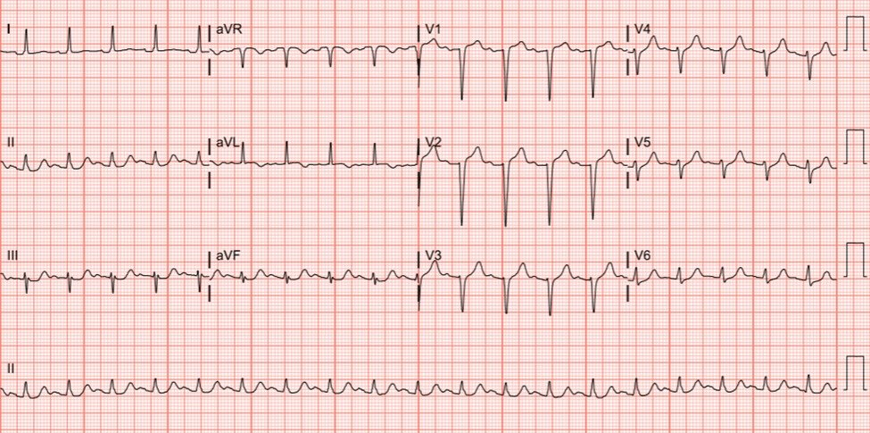
Smith: và sóng T không còn tối cấp nữa. Có sóng T tái tưới máu đảo ngược ở aVL và sóng T dương soi gương ở các chuyển đạo dưới.
Troponin của bà lúc 2111 có kết quả 53.8 ng/mL (bình thường < 0.34 ng/mL), gần gấp ba giá trị ban đầu nếu so sánh một cách đại khái giữa hai loại xét nghiệm troponin khác nhau này.
Smith: 53.8 ng/mL là một vùng nhồi máu RẤT lớn.
Bác sĩ tim mạch can thiệp đã được trao đổi khi bệnh nhân đến. Ông quyết định chờ đến hôm sau mới thông tim cho bệnh nhân; bệnh nhân vẫn không đau ngực cho đến khi làm thủ thuật lúc khoảng 1000:

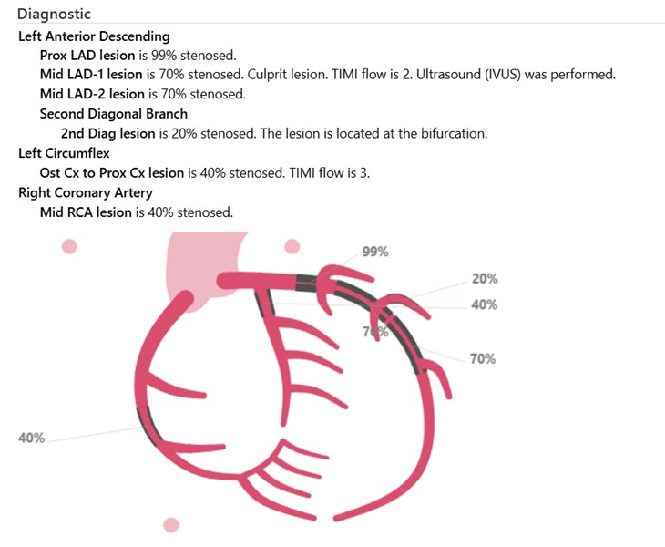
với các can thiệp sau đã được thực hiện:

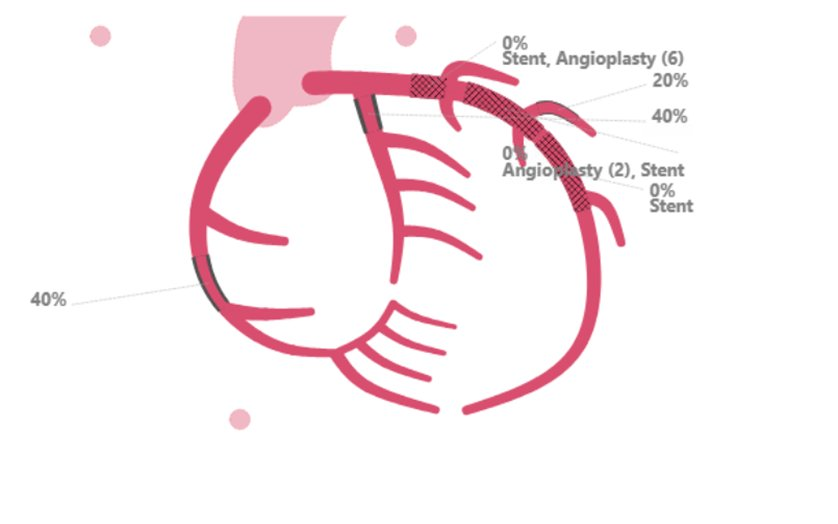
Quả thật, tổn thương nằm ở đoạn gần so với CẢ nhánh xuyên vách lẫn D1.
Điện tâm đồ sau thông tim của bà cho thấy LAD tái tưới máu thêm, với sóng T đảo ngược đối xứng ở aVL và sóng T hai pha, đảo ngược ở phần cuối ở V2:

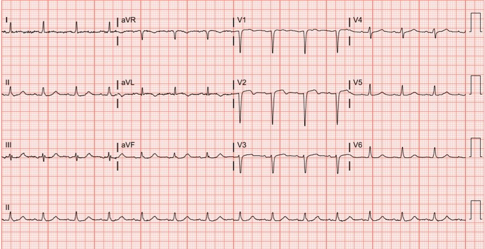
Siêu âm tim sau thông tim cho thấy phân suất tống máu 40% với vùng trước vách giảm động đến vô động, và giảm động ở thành mỏm trước đến giữa và vùng mỏm dưới.
Năm bài học từ ca này:
Đây là một ca đáng tiếc, khi bệnh nhân nhiều khả năng đã mất một lượng chức năng cơ tim lẽ ra không đáng mất, do những sai sót khi đọc điện tâm đồ của cả bác sĩ cấp cứu lẫn bác sĩ tim mạch can thiệp. Nhưng ca này chứa nhiều bài học mà những người khác có thể rút ra. Tôi đã chọn ra năm bài học.
Smith: May mắn cho bệnh nhân là đã có tái tưới máu tự phát, nhờ sự hỗ trợ của aspirin và heparin. Nhưng sự tái tưới máu này chỉ xảy ra SAU KHI một lượng lớn cơ tim đã mất vĩnh viễn, không hồi phục.
Bài học 1: luôn xem điện tâm đồ trong bối cảnh các bản ghi trước. Có thể đã chẩn đoán đúng đặt sai vị trí điện cực nếu dải nhịp của EMS khi đến viện được so sánh với điện tâm đồ đầu tiên ghi tại khoa cấp cứu. Biết đâu thực ra đã có so sánh. Điều này dẫn tới:
Bài học 2: hãy học cách nhận biết đặt sai vị trí điện cực chi. Tôi trình bày một phương pháp phát hiện đặt sai vị trí điện cực ngay trong bài giảng đầu tiên mà tôi dạy cho bác sĩ nội trú và các học viên khác mỗi năm. Tôi dạy nó ngay sau khi dạy các yếu tố của nhịp xoang bình thường: đó là một kỹ năng thiết yếu và nền tảng đến mức ấy. Chỉ riêng trong chẩn đoán OMI, đặt sai vị trí điện cực có thể tạo ra cả âm tính giả lẫn dương tính giả. Ví dụ, BS. Jesse McLaren chia sẻ một ca trên Emergency Medicine Cases, trong đó một bệnh nhân bị thông tim không cần thiết dựa trên điện tâm đồ đảo điện cực tay trái/chân phải sau đây:

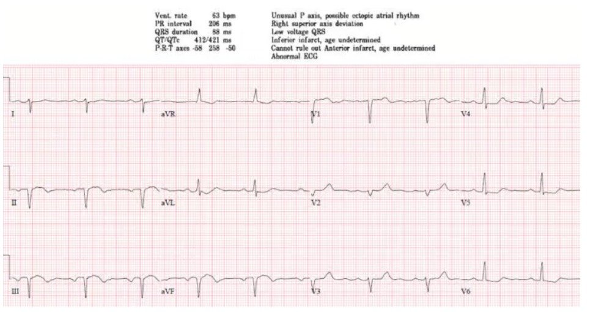
Điện tâm đồ sau khi đặt lại điện cực đúng vị trí trông như sau:

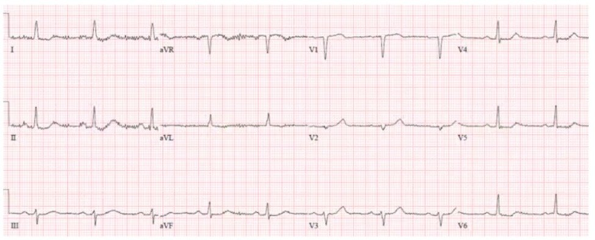
Nhiều chuyên gia đọc điện tâm đồ mà tôi biết có thể ngay lập tức nhận ra và phân loại đặt sai vị trí điện cực chi. Tuy nhiên, tôi không kỳ vọng điều đó ở phần lớn các bác sĩ cấp cứu chính có kinh nghiệm, huống hồ là một sinh viên y năm thứ tư hay một bác sĩ nội trú cấp cứu năm đầu mà tôi đang hướng dẫn. Vì vậy, tôi dạy các “dấu hiệu gợi ý” sau để nhận biết một dạng nào đó của đặt sai vị trí điện cực chi và thúc đẩy việc ghi lại điện tâm đồ một cách cẩn thận:
- 1. P và QRS dương ở aVR
- 2. Sóng P đảo ngược ở các chuyển đạo khác
- 3. Bản ghi “đường thẳng” ở một chuyển đạo
- 4. Trục lệch cực độ
Dù khó nhận ra, điện tâm đồ ban đầu trong ca này có “1. P và QRS dương ở aVR”, “2. sóng P đảo ngược ở (I và aVL)” và “4. Trục lệch cực độ.”
Bài học 3. Chuyển đạo I trong hình ảnh tổn thương bên cao “Cờ Nam Phi” không phải lúc nào cũng thay đổi rõ ràng.
Hãy giả sử điện tâm đồ trước viện được ghi lại tại khoa cấp cứu và trông tương tự. Chỉ riêng các chuyển đạo trước tim cũng đủ khiến một độc giả quen thuộc của blog này nghi ngờ cao “xoáy trước tim”. Nhưng xét tổng thể, điện tâm đồ này gợi ý hình ảnh “Cờ Nam Phi” như thường được dạy cho sinh viên y và học viên cấp cứu: ST chênh lên ở I và aVL, ST chênh xuống ở chuyển đạo III và ST chênh lên ở V2.

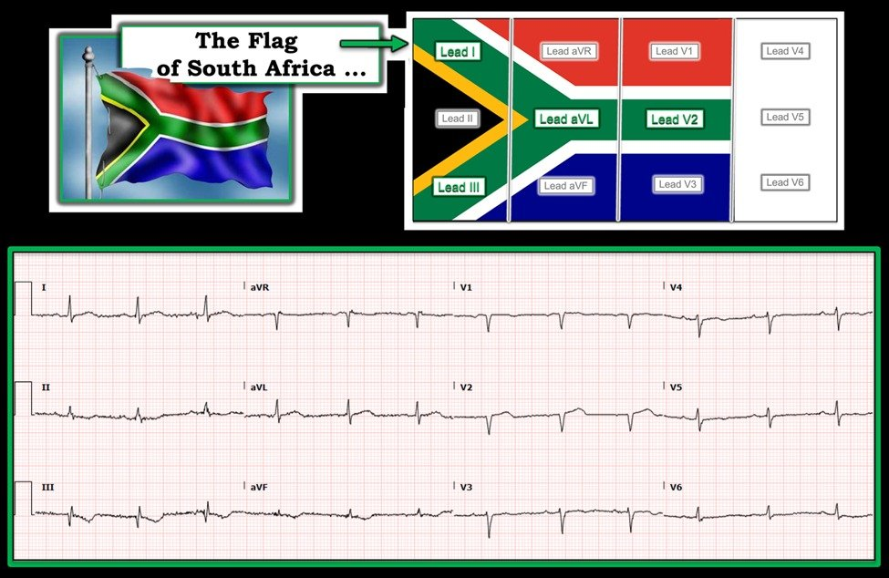
(Hình trên do Ken Grauer cung cấp, qua https://drsmithsecgblog.com/a-woman-in-her-30s-with-sudden-chest/ — Một phụ nữ ngoài 30 tuổi đột ngột đau ngực)
Tôi đã gặp nhiều ca mà thay đổi ở chuyển đạo I không rõ bằng thay đổi ở các chuyển đạo khác được nêu tên trong “Cờ Nam Phi”. Và điều này có thể dẫn đến chậm trễ hoặc bỏ sót chẩn đoán tắc đoạn gần LAD hoặc tắc D1, vì không có các chuyển đạo “liên tiếp” rõ ràng để hỗ trợ cho một tổn thương theo vùng. Bài học: Điều quan trọng là hiểu aVL và các chuyển đạo vách là những “chuyển đạo liên tiếp” tương ứng với vùng đoạn gần LAD hoặc nhánh chéo thứ nhất. Xét theo mẹo ghi nhớ “Cờ Nam Phi”, phần phía trên bên trái của lá cờ thường có thể kín đáo.
Bài học 4: Hãy học các yếu tố bắt buộc của blốc nhánh trái
Các điện tâm đồ ban đầu trong ca này quả thật có phức bộ rộng, với thời gian QRS ở một số chuyển đạo trên 120 ms. Nhưng đó không phải là blốc nhánh trái. Như đã nêu ở trên, điện tâm đồ blốc nhánh trái phải có sóng R đơn pha ở các chuyển đạo I, aVL và V6.
Bài học 5: Hiểu về aVR và “hình ảnh do tăng nhu cầu (demand pattern).”
Tôi dạy học viên của mình rằng aVR là “chuyển đạo soi gương vĩ đại.” Đây là chuyển đạo duy nhất không “nằm phía trên” cơ tim thất. Vì vậy, ST chênh lên hay chênh xuống ở chuyển đạo này không cung cấp thông tin về thiếu máu cục bộ ở một vùng cơ tim cụ thể [người dịch: nguyên văn ghi “does provide” — nhiều khả năng là lỗi đánh máy của “does not provide”]. Thay vào đó, ST chênh lên ở chuyển đạo này là hình soi gương của ST chênh xuống lan tỏa với vectơ ST chênh xuống hướng về II và V5, đặc biệt trong cái mà tôi gọi là “phân bố do tăng nhu cầu (demand distribution)”: trong thiếu máu cục bộ dưới nội tâm mạc không có vùng thủ phạm rõ ràng, ST chênh xuống tối đa thường thấy ở các chuyển đạo II, V5 và V6. Một số ca trên blog này và ở những nơi khác cho thấy hình ảnh này liên quan với nứt vỡ mảng xơ vữa ở thân chung trái hoặc đoạn gần LAD ở những bệnh nhân có tuần hoàn bàng hệ rất phát triển. Nhưng bức tranh mà điện tâm đồ này vẽ ra không phải là một vùng cụ thể đột ngột bị mất cung cấp oxy. Thay vào đó – khi không có đặc điểm định khu nào khác – đó là thiếu máu cục bộ do tăng nhu cầu toàn thể, có thể gặp trong bất kỳ loại sốc nào, từ nhiễm khuẩn huyết đến xuất huyết tiêu hóa. Nếu đây không phải là dấu hiệu nền (có thể gặp khi có LVH), tôi dạy bác sĩ nội trú rằng hình ảnh này nên khiến ta nghĩ đến một người 1) đang sốc và bệnh rất nặng và 2) cần suy nghĩ cẩn thận về việc điều gì đang gây ra sốc cho họ.
Tuy nhiên, vì ST chênh lên ở chuyển đạo này không có giá trị chẩn đoán thiếu máu cục bộ xuyên thành, theo ý kiến của tôi nó sẽ không đủ để thỏa mãn tiêu chuẩn Sgarbossa dựa trên ST chênh lên đồng hướng ở một chuyển đạo.
Smith: khi điện cực được đặt đúng vị trí, aVR hầu như luôn âm là chủ yếu, kể cả trong LBBB. Vì vậy, trong LBBB, ST chênh lên không thể đồng hướng. Nhưng nó CÓ THỂ ngược hướng quá mức xét theo tỷ lệ, và khi đó, nó là hình soi gương của ST chênh xuống lan tỏa, giống hệt như khi dẫn truyền bình thường. Và nếu nó ngược hướng rất nhiều (>30%), có thể chẩn đoán OMI nếu bối cảnh lâm sàng phù hợp (không phải thiếu máu cục bộ do tăng nhu cầu)
Suy nghĩ cuối cùng:
Một thách thức của Y học cấp cứu là chất lượng chăm sóc mà bệnh nhân nhận được từ các chuyên gia thường chỉ tốt bằng lập luận mà bác sĩ cấp cứu đưa ra. Nhìn lại, vị bác sĩ cấp cứu có lợi thế được trực tiếp khám bệnh nhân tại giường dường như đã tin chắc rằng bà đang bị nhồi máu cơ tim. Ông đã cố gắng chăm sóc tốt, lấy chấp thuận của bệnh nhân để dùng tiêu sợi huyết và gọi cho bác sĩ tim mạch can thiệp hai lần về khả năng dùng thuốc. Nhưng vì neo vào một cách đọc điện tâm đồ sai – blốc nhánh trái, Sgarbossa dương tính dựa trên aVR, thay vì tổn thương bên cao kèm đặt sai vị trí điện cực chi trên, cùng tổn thương vách đạt STEMI kèm thay đổi soi gương ở các chuyển đạo trước tim bên – ông đã không đưa ra được lập luận đủ thuyết phục để bác sĩ tim mạch can thiệp đồng ý dùng tiêu sợi huyết.
======================================
BÌNH LUẬN CỦA TÔI, bởi KEN GRAUER, MD (13/9/2025):
Trong bài hôm nay — BS. Floyd phân tích một loạt sơ suất, bắt đầu từ điện tâm đồ ban đầu được nhắn tin cho anh. Việc đánh giá bản ghi ban đầu này bị phức tạp hóa bởi đảo điện cực LA-RA, làm thay đổi đáng kể hình dạng các chuyển đạo chi trên bản ghi này.
- Tôi tập trung Bình luận của tôi vào điện tâm đồ ban đầu này — trước hết bằng việc điểm nhanh những thay đổi về hình dạng điện tâm đồ có thể dự đoán khi có đảo điện cực LA-RA (Xem Hình 1) — và sau đó minh họa trong Hình 2 bản ghi ban đầu hôm nay lẽ ra sẽ trông như thế nào nếu các điện cực được đặt đúng vị trí.
Tài liệu tham khảo trực tuyến “tra nhanh ưu tiên” (Quick GO-TO) mà tôi yêu thích cho các dạng đặt sai vị trí điện cực thường gặp nhất là của LITFL ( = Life-In-The-Fast-Lane). Tôi đã dùng trang web tuyệt vời mà họ đăng trên website của mình về chủ đề này trong nhiều năm. Nó rất DỄ tìm — Chỉ cần gõ “LITFL Lead Reversal” vào thanh tìm kiếm — và đường link hiện ra ngay lập tức.
- Trang web này của LITFL mô tả 7 dạng đảo điện cực thường gặp nhất. Còn có những khả năng khác (tức là trường hợp có thể đặt sai nhiều điện cực) — nhưng những dạng này ít gặp hơn và khó dự đoán hơn.
- Cho đến nay (!) — dạng đảo điện cực thường gặp nhất là nhầm lẫn giữa điện cực LA (Left Arm — tay trái) và RA (Right Arm — tay phải). Đây chính là sự nhầm lẫn đã xảy ra ở điện tâm đồ #1a. Để cho rõ, trong Hình 1 — tôi đã sao lại hình minh họa từ LITFL về đảo điện cực LA-RA.
- Điểm MẤU CHỐT: Đảo điện cực LA-RA rất DỄ nhận ra khi bạn thấy “âm toàn bộ” (global negativity) ở chuyển đạo I (tức là khi sóng P, phức bộ QRS và sóng T đều âm ở chuyển đạo I ). Ngay cả khi không có sóng P (hoặc sóng P ở chuyển đạo V1 rất nhỏ — như trong ca hôm nay) — một phức bộ QRS âm hoàn toàn ở chuyển đạo I gần như không bao giờ gặp trong nhịp trên thất!
- LƯU Ý: Tôi đã thu thập và sắp xếp hơn 20 ví dụ về đảo điện cực (cũng như nhiều ví dụ khác về các “sự cố kỹ thuật (technical misadventures)) quan trọng cần nhận ra. Có thể dễ dàng truy cập tài liệu hướng dẫn này từ Thẻ Menu ở đầu mọi trang của Dr. Smith’s ECG Blog — Chỉ cần BẤM VÀO ĐÂY —
= = =
Hình 1: Đảo điện cực LA-RA (phỏng theo LITFL).

= = =
Áp dụng Hình 1 vào CA BỆNH hôm nay:
Để cho rõ — tôi đã lấy điện tâm đồ ban đầu trong ca hôm nay ( = điện tâm đồ #1a) — rồi đảo ngược chuyển đạo I — hoán đổi chuyển đạo II và III — và hoán đổi chuyển đạo aVL và aVR ( = điện tâm đồ #1b, là bản ghi phía dưới trong Hình 2).
- Lưu ý rằng các “dấu hiệu tố cáo” của đảo điện cực LA-RA ( = âm toàn bộ của sóng P, QRS và sóng T ở chuyển đạo I — và QRS dương hoàn toàn ở chuyển đạo aVR) không còn hiện diện trên điện tâm đồ #1b.
Giờ đây, khi hình dạng phức bộ QRST trên điện tâm đồ ban đầu hôm nay đã giống như nó lẽ ra phải có nếu các điện cực LA và RA được đặt đúng vị trí — chúng ta có thể dễ dàng diễn giải hơn từ điện tâm đồ #1b các dấu hiệu chính của bản ghi ban đầu này:
- Có nhịp nhanh xoang.
- Phức bộ QRS giãn rộng — nhưng như BS. Floyd đã nêu, thay vì LBBB, các sóng S sâu kéo dài ở các chuyển đạo ngực bên phù hợp nhất với IVCD (chậm dẫn truyền trong thất — IntraVentricular Conduction Defect) kèm trục lệch trái rõ rệt (QRS âm là chủ yếu ở cả 3 chuyển đạo dưới).
- ST chênh lên bất thường ở chuyển đạo V1 — và ST-T to không tương xứng ở chuyển đạo V2 kế bên — cùng với ST chênh xuống dạng bậc thềm (shelf-like) ở chuyển đạo V6 (và ở mức độ ít hơn ở các chuyển đạo V4, V5) ở bệnh nhân 80 tuổi có CP (đau ngực — Chest Pain) mới xuất hiện này gợi ý mạnh “xoáy“ trước tim do tắc đoạn gần LAD.
- Nhận định này được hỗ trợ trên điện tâm đồ #1b bởi các dấu hiệu ở chuyển đạo chi gồm: i) ST chênh lên ở chuyển đạo aVL và chuyển đạo I; — và ii) ST chênh xuống soi gương ở từng chuyển đạo dưới.
- Đáng lưu ý là sóng T đảo ngược ở phần cuối ở chuyển đạo aVL, cùng phần cuối sóng T dương ở các chuyển đạo dưới — có thể là biểu hiện của một phần tái tưới máu tự phát.
- XIN NHẤN MẠNH: ST chênh lên ở chuyển đạo aVL vốn rất thường đi kèm (và hỗ trợ nhận định chẩn đoán của chúng ta về) tắc LAD đoạn gần — đã không nhận ra được trên điện tâm đồ ban đầu hôm nay do đảo điện cực LA-RA.
= = =
Hình 2: Tôi đã sao lại điện tâm đồ ban đầu của ca hôm nay — và ở bản ghi phía dưới, đã chỉnh lại để thấy điện tâm đồ ban đầu này sẽ trông như thế nào nếu các điện cực được đặt đúng vị trí. (Để dễ quan sát hơn — tôi đã số hóa các bản ghi này bằng PMcardio).

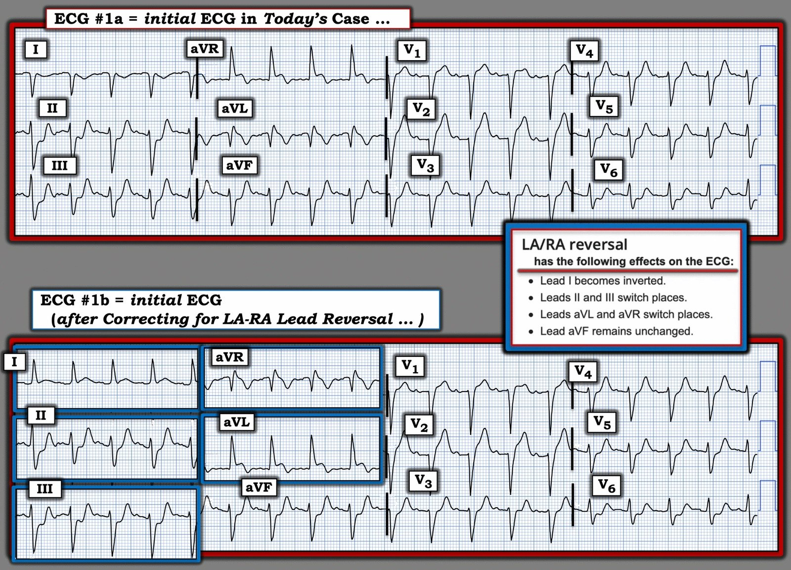